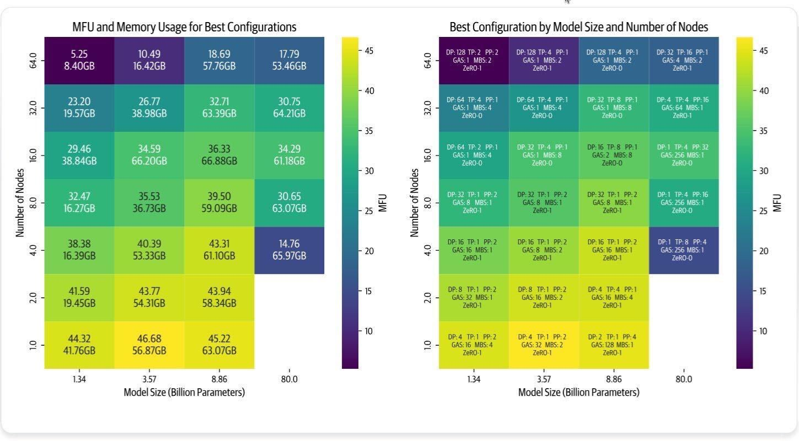

DDP, FSDP, TP, PP: A Field Guide to Modern Parallelism Strategies
Introduction
Every time I open Twitter/X/LinkedIn these days I see the same alphabet-soup: DDP, FSDP, TP, PP, DiLoCo.
It’s easy to think they’re just buzzwords slapped onto marketing decks, but behind each acronym is a concrete trade-off between memory, speed, and how often your GPUs have to talk to one another.
The other day I ran a quick lightning lesson where I tried to draw the whole zoo on a single whiteboard.
The drawing was… enthusiastic.
So here’s the cleaned-up, blog-ready version: one place to look when you’re asking “which strategy do I pick when my 70-B model doesn’t fit on my 4-4090 box?”
Distributed Data Parallelism (DDP)
DDP is the bread-and-butter of multi-GPU training.
The recipe is almost boring:
- Clone your entire model onto each GPU.
- Let every GPU munch on a different slice of the batch (local batch = 8 → global batch =
8 × #GPUs).
- After
backward(), average the gradients in one all-reduce.
- Step the optimiser. Repeat.
Because nothing is sharded, the memory footprint per GPU is full model + gradients + optimiser states.
The upside: dead simple and near-linear throughput gains.
The downside: if the model itself is bigger than a single GPU, DDP can’t help; your GPUs will simply OOM.
ZeRO & FSDP: shard the world
ZeRO (Zero Redundancy Optimizer) and its PyTorch twin FSDP (Fully-Sharded Data Parallel) attack memory, not throughput.
They introduce a communication ⇄ memory dial you can turn at three levels:
| Stage | Shards what? | Memory saved | Extra comms? |
|---|---|---|---|
| ZeRO-1 | optimiser states only | ~25–30 % | almost free |
| ZeRO-2 | optimiser states + gradients | ~50–60 % | modest |
| ZeRO-3 | everything (weights, grads, opt states) | ~75 % | heavy but predictable |
A quick mental model:
- ZeRO-1 is “I just need a little more head-room”.
- ZeRO-2 is the sweet spot for most pre-training runs.
- ZeRO-3 is “I want to train a 70-B model on 4×A6000s”.
An aside: Hybrid Sharding
Inside a single node NVLink is fast.
Across nodes it’s not. (Blame our fastest ethernet speed at 100GbE/25GB/s)
So run ZeRO-2 per node, then a lightweight all-reduce every k steps to keep the global view consistent.
That’s what the PyTorch folks call hybrid shard and it’s often the cheapest way to scale.
Pipeline Parallelism (PP)
When a single layer still fits on one GPU but the whole model does not, slice the model horizontally: layer 0–10 on GPU-0, 11–20 on GPU-1, etc.
Forward is a literal pipeline: GPU-0 finishes micro-batch-1, ships activations to GPU-1, then immediately starts micro-batch-2 while GPU-1 is still crunching micro-batch-1.
Pros
- Only activations cross node boundaries—gradients stay local.
- Works great for inference too: you can throw away the backward pass and just stream tokens through the pipe.
Cons
- You have to partition the graph yourself.
- The bubble at the end of each step (GPUs waiting for tail batches) can eat 10–20 % of your throughput if micro-batches are small.
PyTorch’s torchpippy (which lives in torch.distributed.pippy) can auto-partition a HF model the same way device_map="auto" does for inference—handy if you hate counting layers.
Tensor Parallelism (TP)
Instead of slicing layers, slice within each layer.
For a linear layer Y = XW, split W column-wise across GPUs.
Every forward pass becomes an all-reduce, but each GPU only stores 1/k of the weight matrix.
Because the communication is every layer, you really want NVLink or InfiniBand. PCIe will murder you.
Composing the Lego bricks
These strategies are orthogonal.
Real-world runs stack them into 2-D or 3-D meshes:
Data Parallel (DDP/FSDP) -> replicas across nodes
└── Pipeline Parallel -> layers across GPUs inside a node
└── Tensor Parallel-> split each layer across GPUsMegatron, Nanotron, or TorchTitan let you write a tiny YAML:
tensor_parallel_size: 2
pipeline_parallel_size: 4
data_parallel_size: 8and the framework wires everything together.
For the best visualization on optimizing this topology, see this reference from the nanotron team (lighter color == good):

Diloco: ZeRO-2 at planet scale (kinda)
ZeRO-2 keeps weights local and syncs only the sharded optimiser states.
DiLoCo (Decentralised Low-Communication) applies the same idea across islands of machines with slow links (because regular internet is quite slow).
Each “neighborhood” trains locally for n steps asynchronously, then syncs its aggregated model updates (or pseudo-gradients) with the others using a lightweight, decentralized update.
It’s not quite ZeRO-2 with a long ping, but it does let you train LLMs across the globe without melting your bandwidth.
Prime Intellect already has an open-source implementation (OpenDiLoCo); I’ll leave a link at the bottom.
Article Takeaways
- DDP is the default until your model can’t fit into memory on its own.
- ZeRO-2/FSDP is usually the cheapest knob to turn next.
- Pipeline parallelism is great when layers are chunky; tensor parallelism when weights are chunky.
- Combine all three for giant models; let Megatron/nanotron/TorchTitan handle the plumbing.
- Measure interconnect with T-flops and torch-profiler, not eyeballs.
- Your most expensive resource is time waiting on other GPUs, minimise that and you minimise the cloud bill.
Conclusion
Pick one strategy and you’re probably fine.
Pick two to three and you can pre-train a 400-B model in your bathtub (okay, maybe a garage full of GPUs).
If you want to go deeper, I’m collecting everything: notebooks, diagrams, and working configs, into a repo that accompanies the Scratch-to-Scale course.
We’ll rebuild DDP, ZeRO, PP and TP from the ground up, then bolt them together until something catches fire (in a good way).
Use the following link to get 35% off entry, and hear from the folks who have built the frameworks I talked about here as part of the fun
Happy learning!